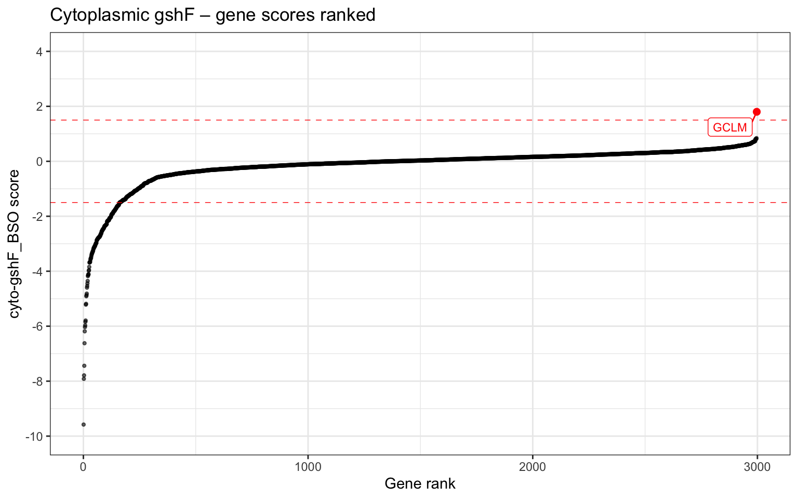
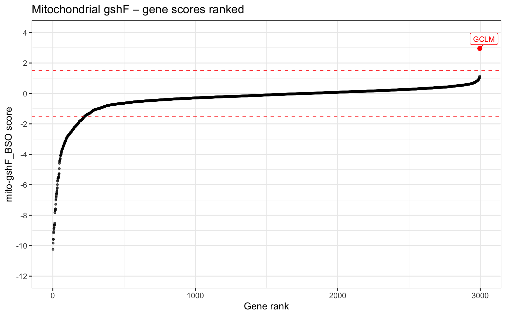
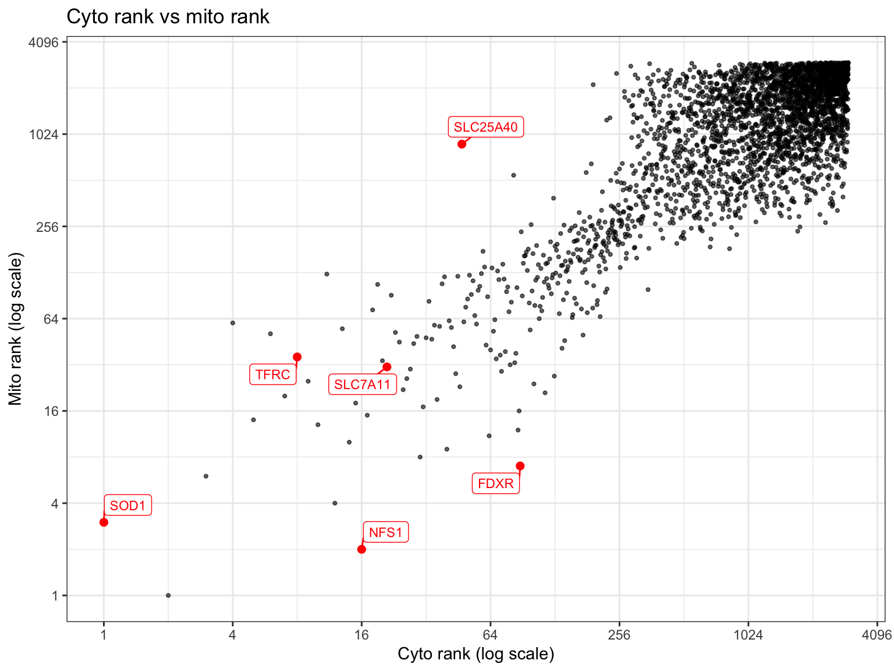

Rows before filtering: 23940 Rows after filtering: 2997 Generated: 2026-04-14 14:07:08
Packages: readxl, dplyr, ggplot2, ggrepel, yaml.
Sheet imported: Table S1 Gene Scores.
Remove rows whose Names entry starts with sg (guide RNA controls) or starts with INTERGENIC (non-gene features).
Rows before filtering: 23940 Rows after filtering: 2997 Genes ranked by ascending score in each condition.
Genes ranked by ascending cytoplasmic gshF score under BSO treatment. GCLM is highlighted as a positive control — it encodes the modifier subunit of glutamate-cysteine ligase, a key enzyme in glutathione biosynthesis. The dashed lines mark the ±1.5 threshold used to extract the high- and low-score gene lists below.

Same as above for the mitochondrial gshF condition. GCLM is again highlighted as a reference point.

Cross-condition comparison of gene ranks on log scales. Genes in the lower-left corner score poorly (low rank) in both conditions, suggesting relevance to glutathione homeostasis regardless of compartment. Highlighted genes are known those labelled by the original authors in their figure, used here as reference points to confirm the data was imported and processed correctly.

$timson_2024_cyto_high_score
[1] 1
$timson_2024_cyto_low_score
[1] 161
$timson_2024_mito_high_score
[1] 1
$timson_2024_mito_low_score
[1] 225Write the four gene lists to gene_lists.yaml, each with accompanying metadata.
Wrote 4 gene lists to data/timson-2024.yaml